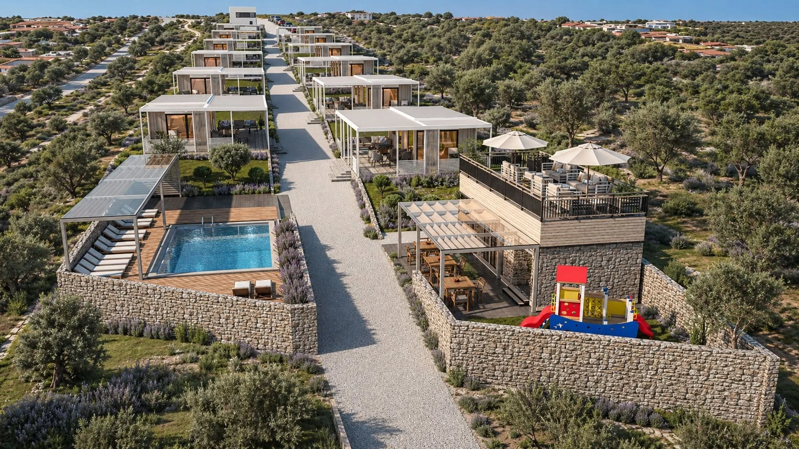
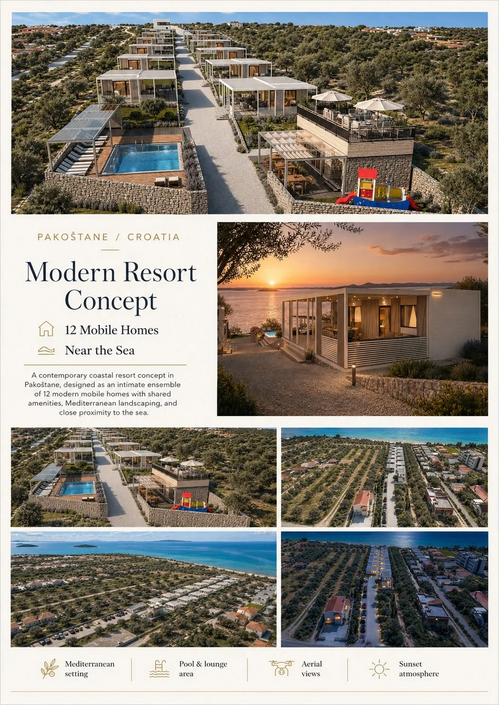

Coastal resort · Pakoštane, Croatia
Pakoštane Resort
Resort and campsite visualization
A clear vision for place and experience.
A coastal resort study that communicates accommodation, shared amenities and family recreation as one coherent destination. A presentation board and experiential view support both big-picture masterplan decisions and an inviting market vision.
LocationPakoštane, Croatia
Project typeResort and campsite visualization
FocusCampsite masterplan visualization

Services provided
Built to communicate the development.
Continue exploring
Related project studies.
Available for collaboration